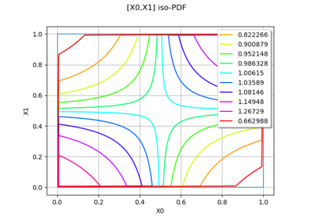

Estimate dependency and copulas¶


Fit a non parametric copula
Estimate tail dependence coefficients on the wave-surge data
Estimate tail dependence coefficients on the wave-surge data
Estimate tail dependence coefficients on the wind data
Estimate tail dependence coefficients on the wind data